其他
完整模型：五官、身体、衣服和头发
视频没有章节，约 66 分钟，是同一套设计稿的贴图课，中间夹着片头片尾。前段用 VRoid Studio 1.24.1 画脸，身体和衣服是 1.26.0，头发是 1.26.2。细纹理另开 Clip Studio Paint。界面是日文。课停在摄影预览，没有打开导出。
脸
先对设计稿
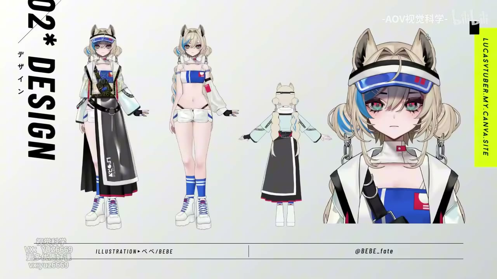
要做的是金发、一侧蓝挑染、猫耳、蓝白护目镜、短上衣、白外套、黑长裙和斜挎包。后面每次只画稿子上有的一块，不在 VRoid 里另起一套造型。
肤色和耳朵
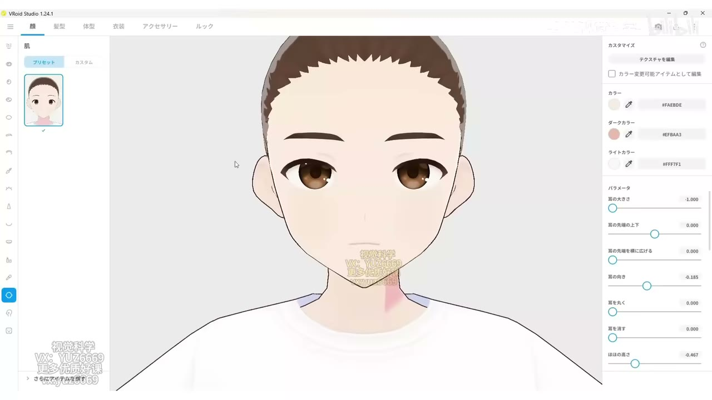
在「顔 → 肌」里定三层肤色：カラー偏浅，ライトカラー接近白，ダークカラー是更暖的肉色。色号末位贴着水印，这里不照抄。耳朵不另开页面，就在这一栏里收：耳の大きさ拉到最左，画面读数 -1.000，耳朵明显变小；耳の向き -0.185，耳尖略转向；ほほの高さ -0.467，脸颊位置下移。耳先の上下、耳先の広がり、耳を消す停在 0。耳を丸くする也略偏左。猫耳是后段的配饰，不是这里的人耳。
眼窝阴影
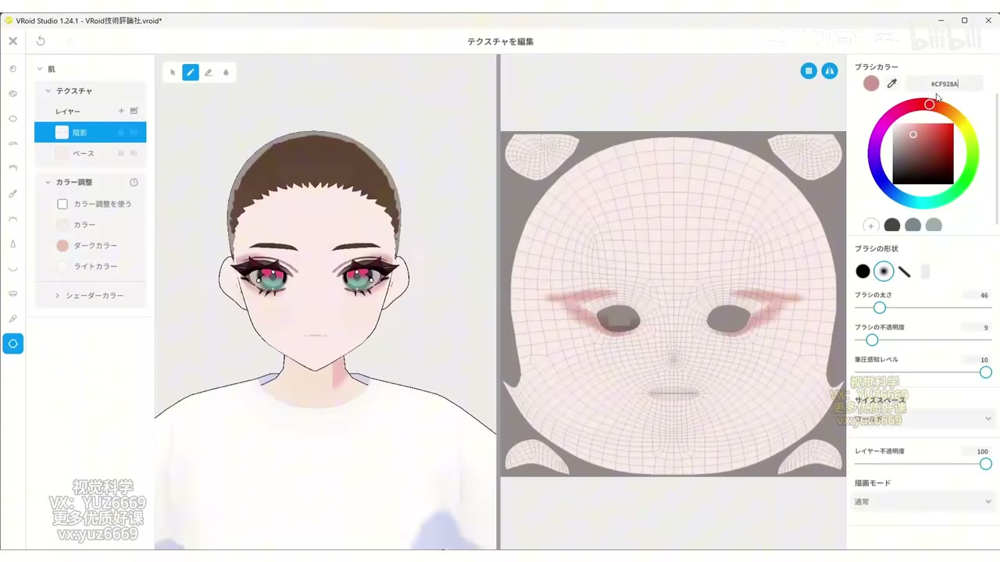
点「テクスチャを編集」。图层分「陰影」和「ベース」，先在阴影层、用 UV 空间顺着脸网的眼窝描一圈淡色。画完正面眼周会陷进去一点，而不是整张脸一起变暗。脸上后来出现的小黑痣也是点在皮肤贴图上的，不是滑杆。
腮红用世界空间
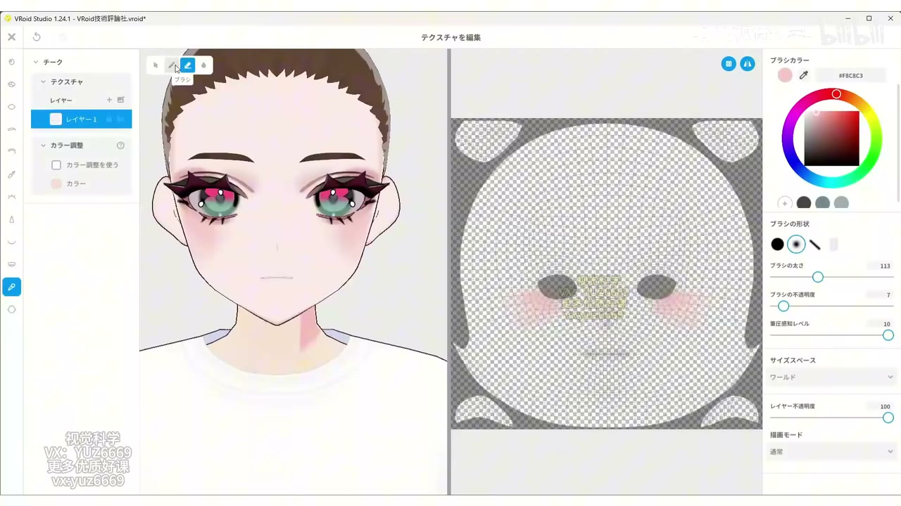
腮红单独在「チーク」。把尺寸空间从 UV 改成ワールド，笔刷跟着脸的表面走，两颊各刷一团很透的粉。不透明度放得很低，脸不会一块一块的色斑。颜色调整保持关掉，直接画在图层上。
眼睛
虹膜画成 C 形渐变
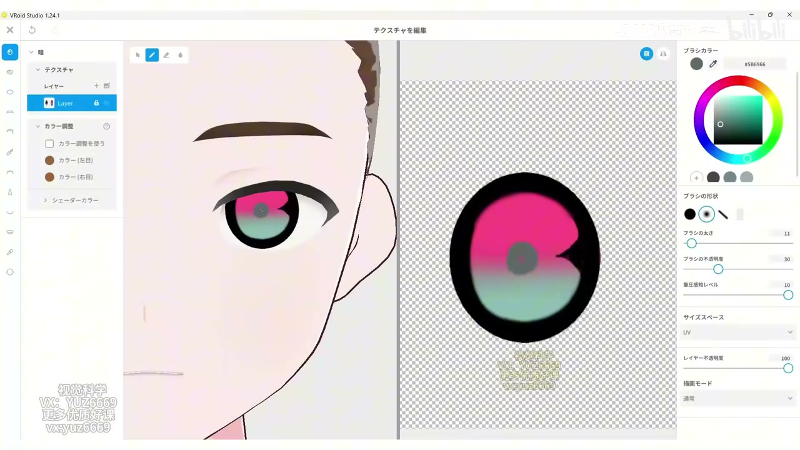
进瞳的纹理编辑，在圆形 UV 里画一圈深色边，中间留出上粉、下青绿的 C 形。左右眼可以在「カラー調整」里分开调，这一帧没勾「カラー調整を使う」，颜色是直接画上去的。画完虹膜从默认棕眼变成设计稿那种粉青对撞。
高光在 Clip Studio 里铺
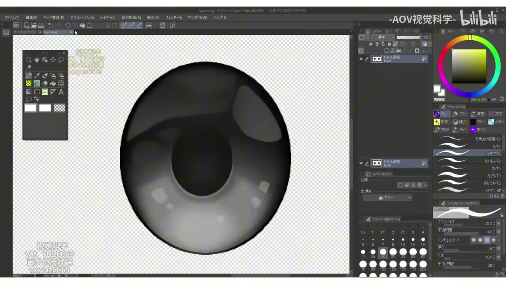
高光不在 VRoid 里硬点。把虹膜拿到 Clip Studio，用软边浅灰白色块出玻璃反光，再回到模型上。这样高光是一块柔的椭圆形，而不是笔刷戳出来的硬点。
眼线先铺厚，再拉眼尾
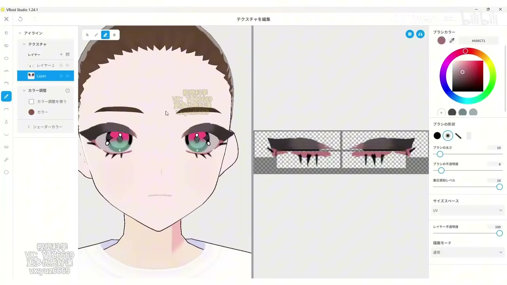
「アイライン」的 UV 是左右各一条。先用粗笔把上眼皮涂成两道拱起的深色，再收成往眼尾翘的翼形，下缘带一点锯齿，给后面的睫毛让位置。后面补眼尾时把尺寸空间改成ワールド，笔顺着眼皮走，眼尾才不会在 UV 上被拉歪。颜色调整同样没开。
睫毛画成尖瓣
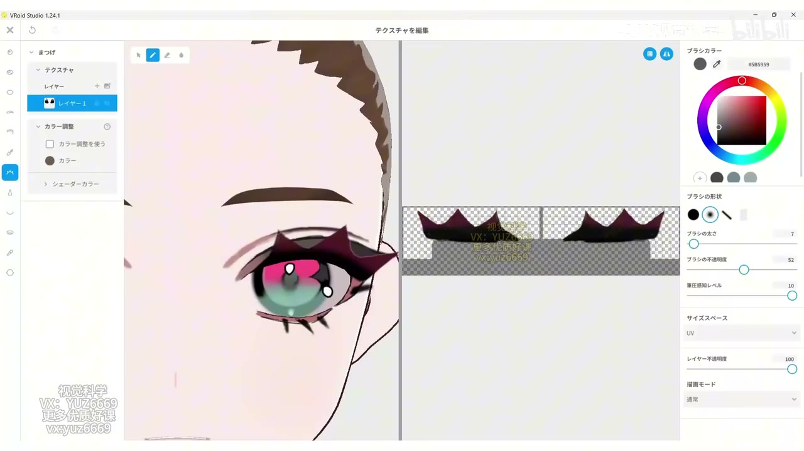
换到「まつげ」，在细长 UV 上画一排外深内浅的尖瓣，尖朝下。模型上就变成往外炸开的上睫毛。这一步和眼线分开，眼线负责眼尾的形，睫毛负责密度。改过瞳、高光、白目、眼线和睫毛之后，画面会提示这些项目要另存，避免覆盖预设。
眼白用乘算压暗
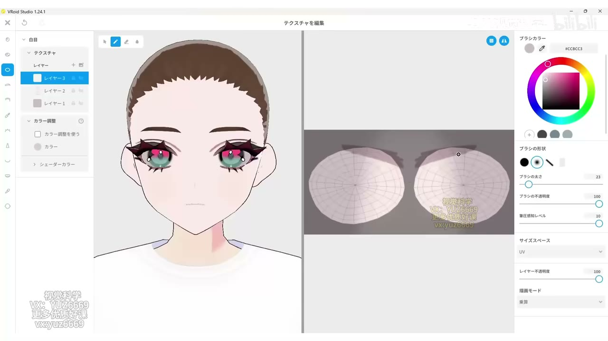
「白目」有叠层。最上层把描画模式改成乗算，在两个椭圆上轻轻刷一笔暖灰。乘算只会压暗，不会把眼白涂成一块实色，眼珠周围就有一圈阴影。
眉毛
眉形贴图
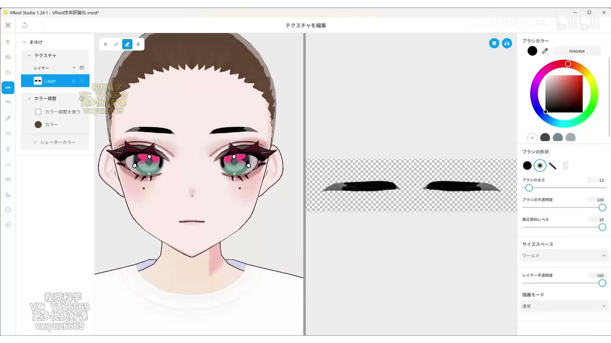
眉毛在「まゆげ」，不要和眼线搞混。用ワールド空间画两条偏平、眉尾略长的黑块。世界空间下笔刷宽度跟着脸走，两条眉的粗细才一致。
把眉压低、收窄
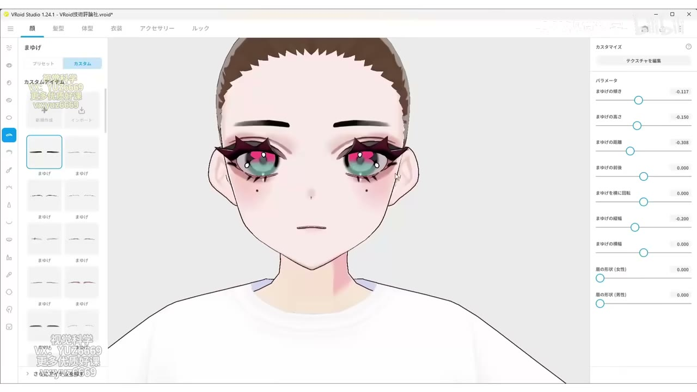
贴图画完再拨滑杆，这一帧读数是：まゆげの長さ -0.117，まゆげの高さ -0.150，まゆげの間隔 -0.308，まゆげの縦幅 -0.200。眉变短、变低、往中间靠、纵向变薄。前后、横旋转、横向宽度，以及男女眉形都停在 0。结果是设计稿那种平、狠的眉，而不是默认的弯眉。
口鼻
嘴缝一条线
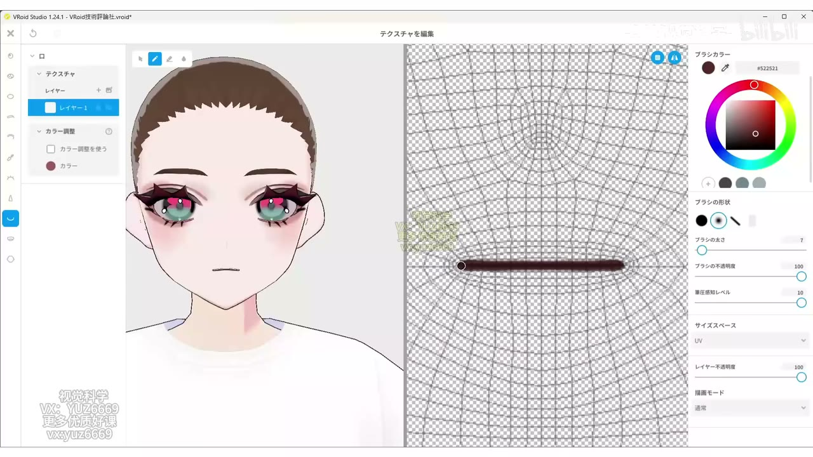
「口」的纹理是一张被拉得很宽的 UV。用细笔在正中画一条深色横线，闭嘴时就是嘴缝。线不要画粗，否则张嘴时缝会变成一块黑斑。
鼻影
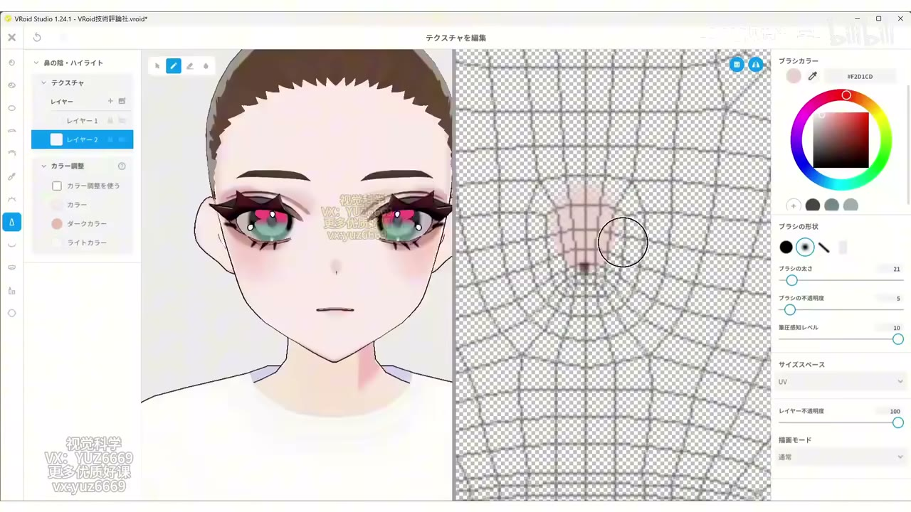
鼻影不跟脸的阴影层混在一起，进「鼻の陰・ハイライト」单独点。笔很小、透明度很低，只在鼻梁和鼻头交接处留一点暖色。正面几乎看不出笔触，侧面鼻梁会立起来。
鼻形滑杆
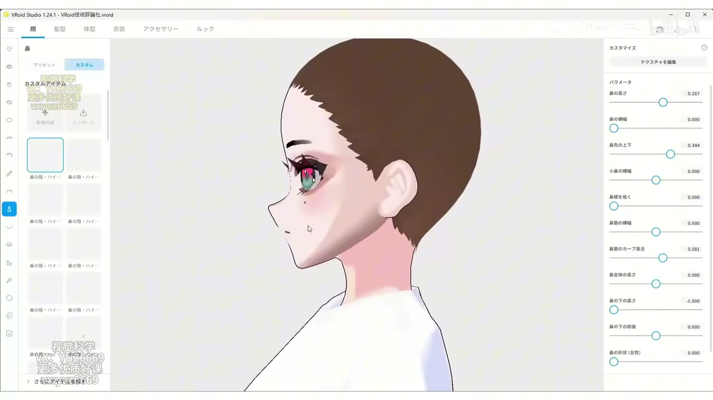
侧面检查「鼻」。鼻の高さ、鼻先の上下、鼻筋のカーブ具合都在中线右边，鼻梁抬高、鼻尖上移、鼻梁有一点弯。鼻の下の高さ拉到最左，画面读数 -1.000，人中变短。鼻宽、鼻翼、鼻整体高度和鼻形男女项停在 0。侧脸因此更贴设计稿，而不是默认的圆鼻。
口腔和牙齿
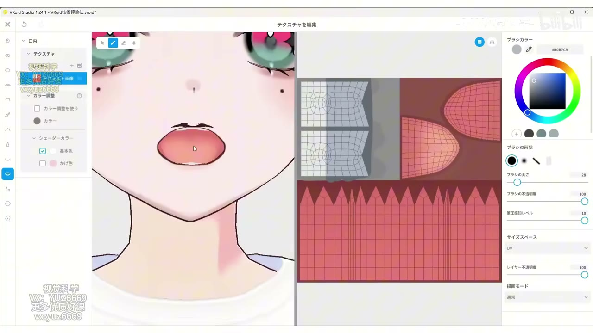
张嘴后编辑「口内」。上半是口腔内侧的 UV，下半画一排牙。基本色涂暖的牙龈和牙，阴影色留给口腔深处。牙不要涂到上半的口腔 UV，否则闭嘴时牙会从嘴唇里透出来。
用表情看眼妆会不会穿
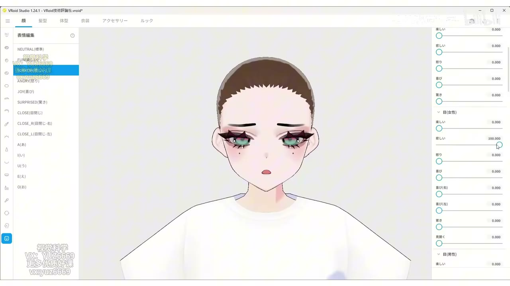
贴图做完不要只看默认脸。打开「表情編集」，把「目（女性）」里的悲伤滑杆拉到右侧，眼皮压下来。用来看睫毛和眼线在闭眼、皱眉时还会不会戳出眼眶。这一段只是检查，滑杆不必留在悲伤上。
体型
身高和四肢
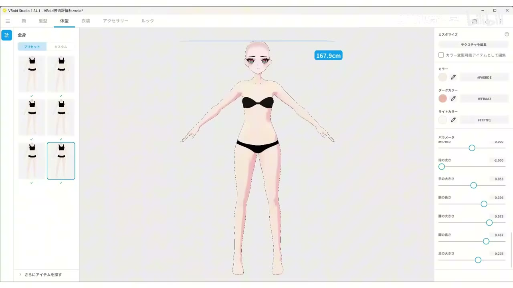
换到「体型 → 全身」，选一个偏瘦的预设。头顶读数是 167.9 cm；大约四分钟后同一页把身高写成 168.0 cm，头的大小和头宽在中线左侧，脖子长度在右侧。手臂那一项明显往左，手臂变细，腿看起来更长。具体肢体读数有几位对不齐水印，这里不抄。
脖子、胸口和身体阴影
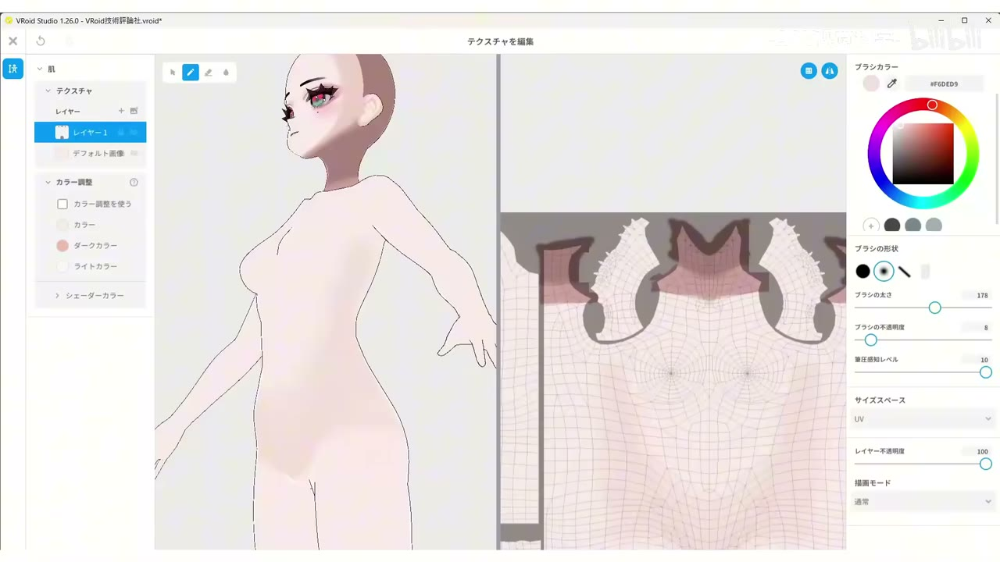
身体皮肤仍是「肌」的纹理编辑，只是 UV 换成躯干。沿锁骨和胸上沿用低透明度刷一层暖灰，脖子和胸口就分开了。肚脐是另一层上点的一小笔深色，膝盖也是同一画法：找对应 UV，只压暗关节，不整条腿涂暗。
指甲
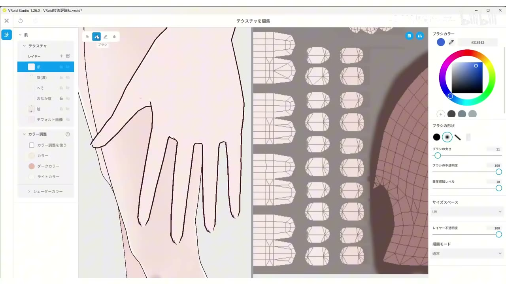
指甲有单独图层「爪」，旁边是一排指甲的小 UV。只在这些小块上涂，颜色不会糊到手指。这一帧还在对位置，甲面还没填实。
衣服
连体衣上铺短上衣
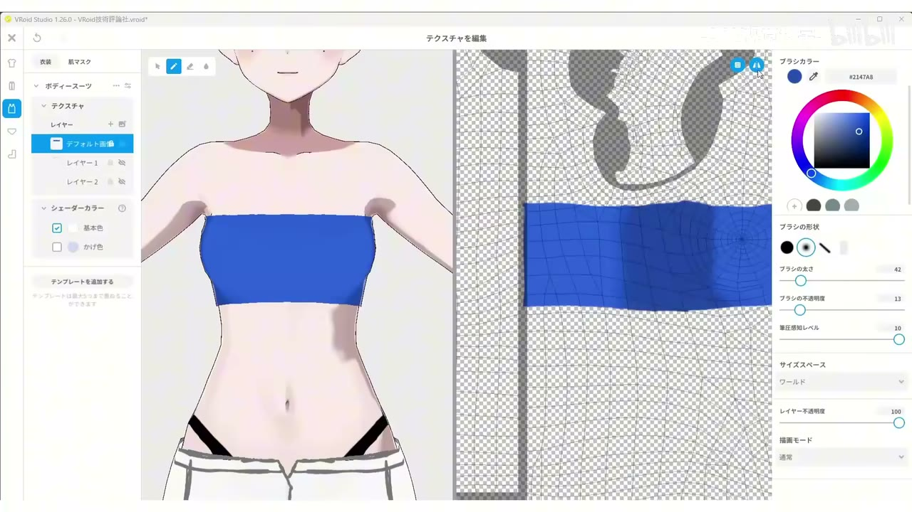
衣服在「衣装」的「肌マスク」里画，露肤靠蒙版留出来。先用ボディスーツ模板，在胸口那一条 UV 上涂实蓝色，身上就是抹胸。シェーダーカラー的基本色开着。腰部收紧一类滑杆在外套模板上，往右收才会贴住腰，这一帧还没收到底。
背后交叉肩带
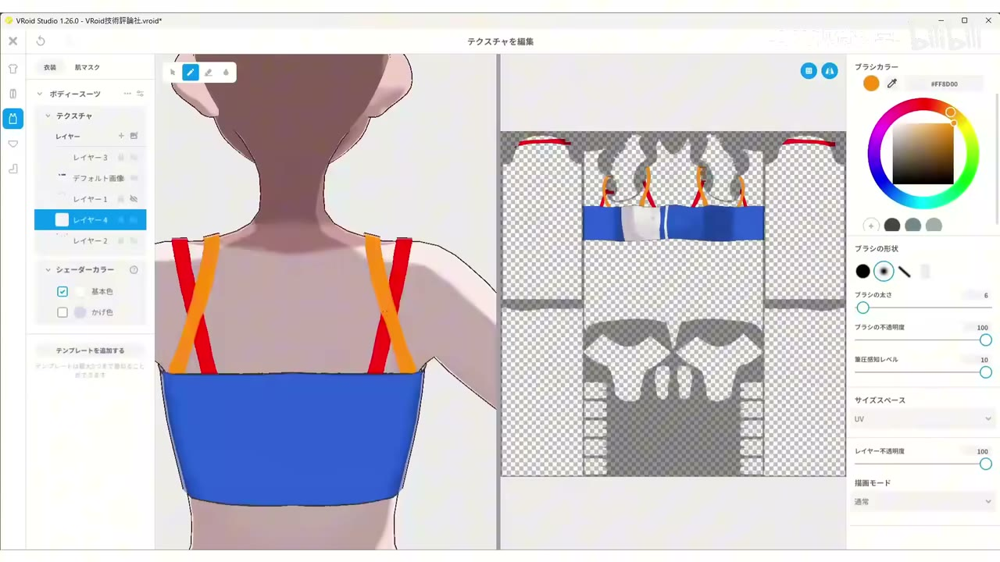
转到背面，在新图层上沿肩带 UV 画两道交叉的橙红色。正面几乎看不见，背面就是设计稿那组带子。带子和上衣底色分层，改颜色时不用重涂蓝色。
胸口色块
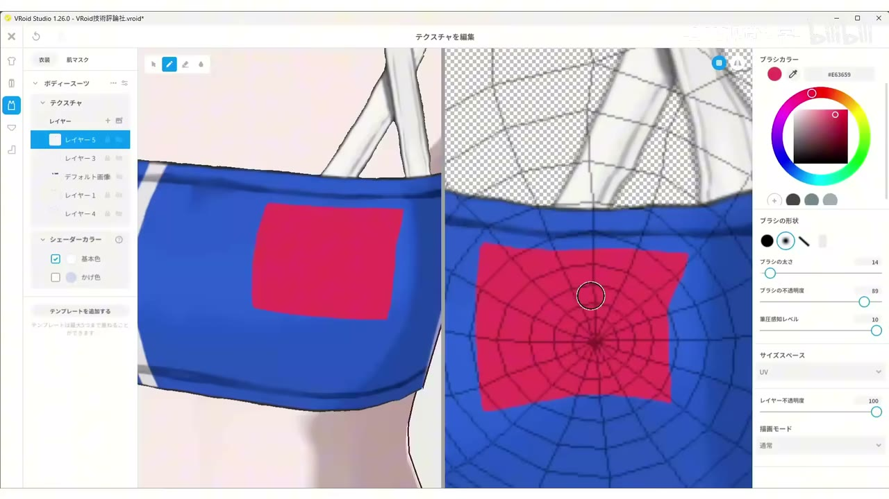
胸口的红块和白圈是再往上叠的图层，用 UV 空间把色块填进蓝色区域里。红块先铺满，白圈后盖上去，对应设计稿胸口的徽章。短裤的侧边蓝条、裤脚接缝也是这个画法：在短裤那一块 UV 上描边，不另开软件。
外套袖子
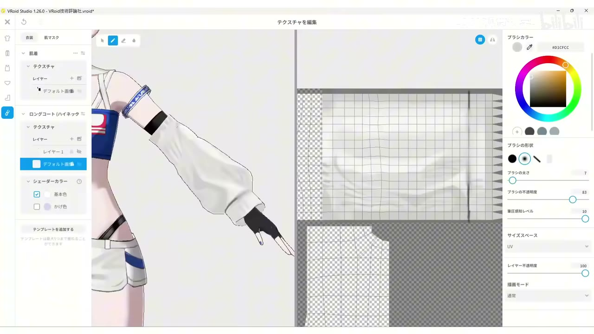
外套用「ロングコート（ハイネック）」模板，列表里会叠好几件，分别当袖子、裙身和带子。袖子 UV 先铺近白，袖口留一块深色，手臂上就出现白泡袖和黑袖口。臂环上的小字也是画在这条 UV 的窄边上。
腰带在 Clip Studio 里画
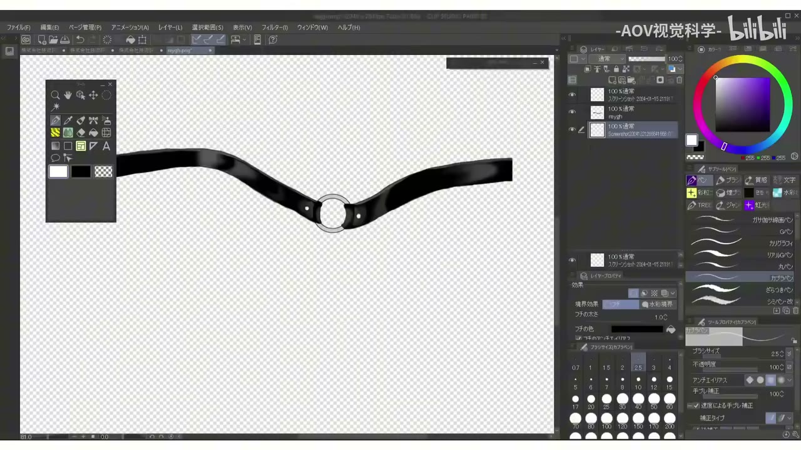
带金属环的腰带不适合在 VRoid 的窄 UV 里硬画。在 Clip Studio 里画出黑带、高光和圆环，再贴回衣服纹理。模型上腰带是硬边的，环也是圆的。
裙子褶皱
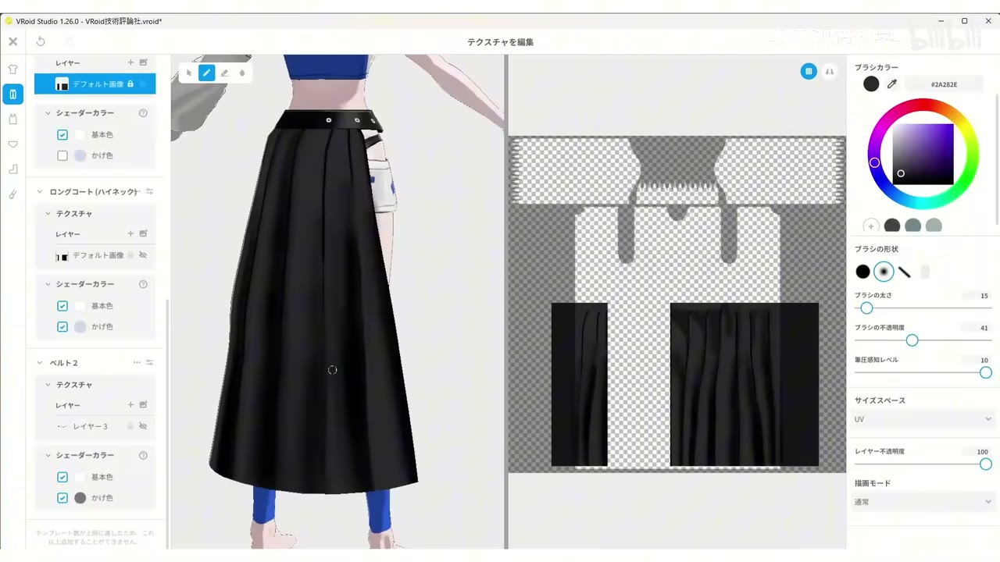
长裙是另一件外套模板改的。下摆两块 UV 先涂黑，再用略浅的竖笔拉出褶皱，裙摆才不会是一块平板。裙摆上的白边和字是后加的图层，这一帧还没画上。
鞋带
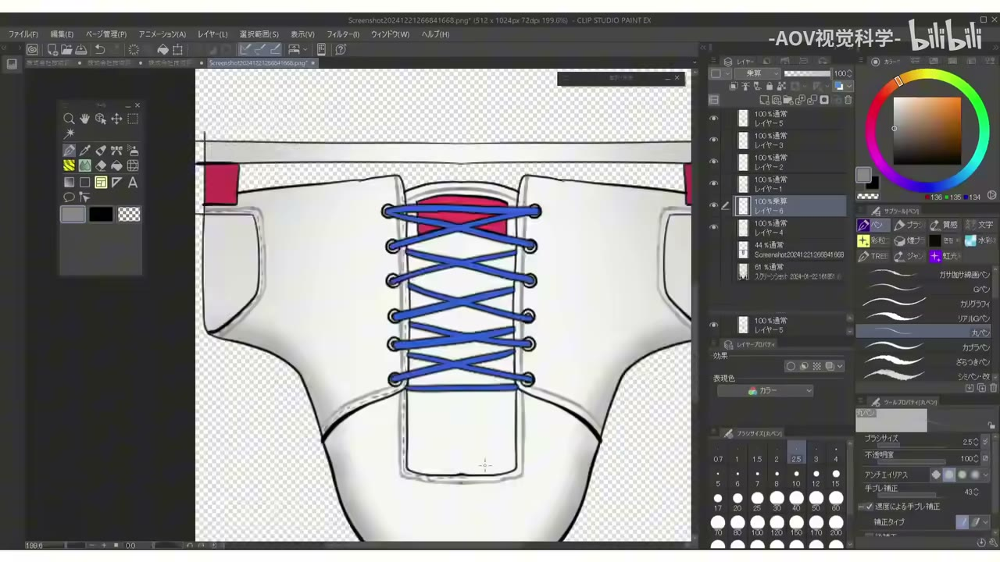
高帮鞋同样先在 Clip Studio 里画展开图：白鞋身、蓝交叉鞋带、鞋舌上一小块红。画完贴回长靴那件衣服的 UV。VRoid 里只负责对上鞋的区域，交叉的带子在外部画才整齐。
斜挎包是衣服列表里的另一件，黑包身加一根红带，画法和袖子相同，包贴在身侧，不是「アクセサリー」。
头发
用手绘导向改刘海
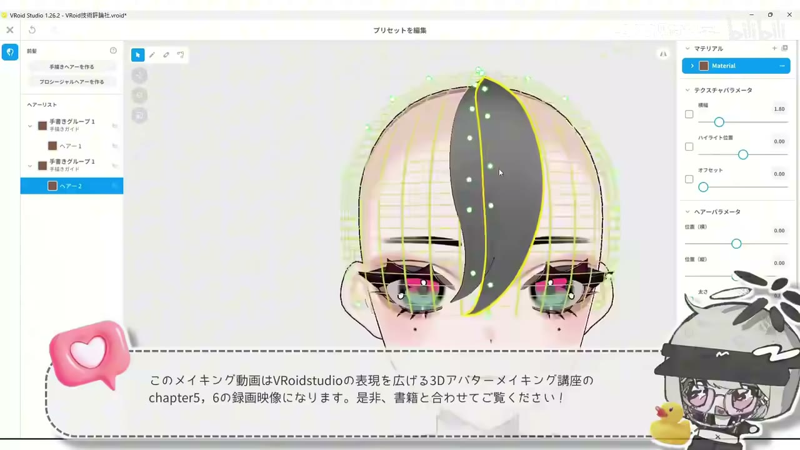
头发从编辑预设开始。选中一束，拉手描きガイド的点，让刘海从中间偏到一侧。右侧纹理参数里横幅开着，数值在 1.8 附近，这缕才够宽。画面底部字幕写明，这段是《VRoid Studioの表現を広げる3Dアバターメイキング講座》第 5、6 章的录像。
挑染画在材质条上
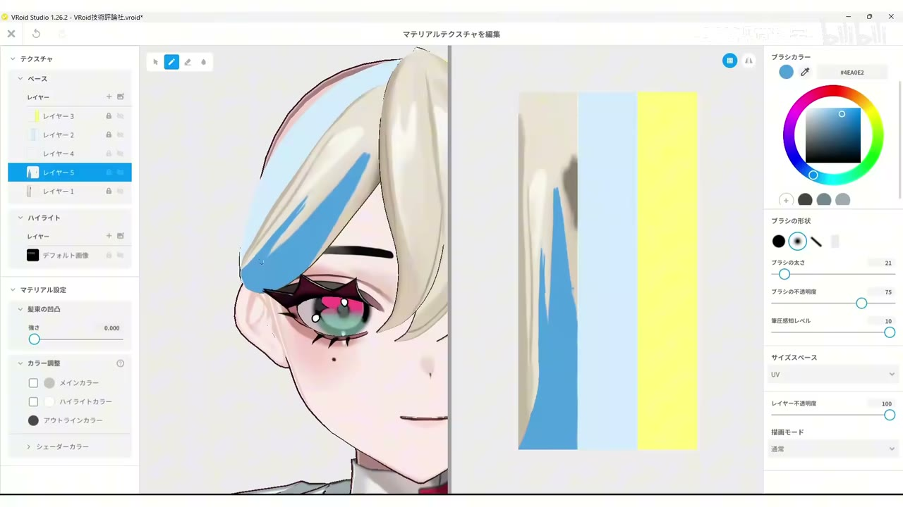
颜色不在头上直接涂，而在「マテリアルテクスチャを編集」。右边是几条竖带：底色一条，高光是旁边那条亮黄。在底色带上画出不规则的蓝边，刘海左侧就会跟着发束出现蓝挑染。主色调成浅金发，高光色用白。髪束の凹凸这一帧停在 0，头发还是平的。
侧发分成左右束
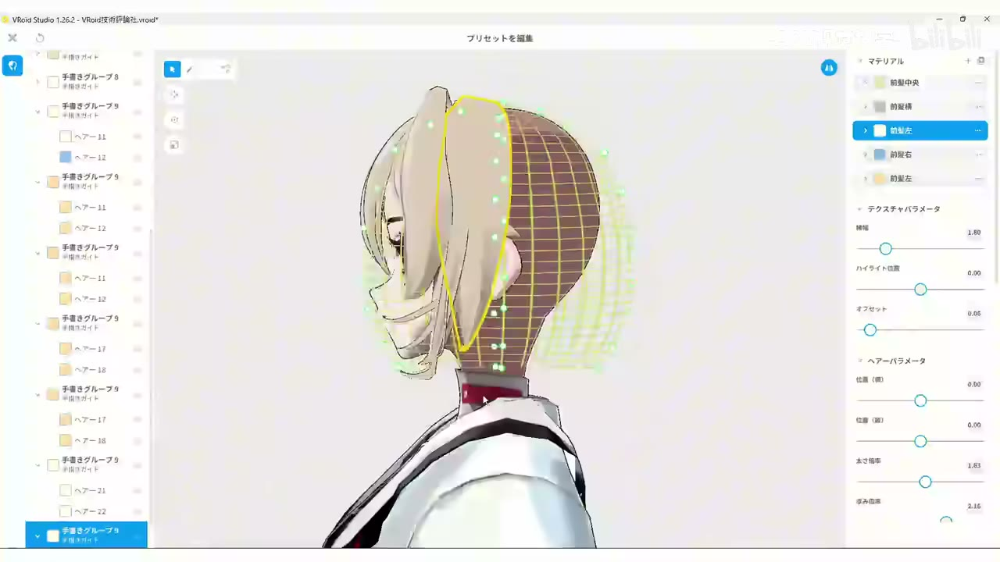
侧发和后发拆成多个手描きグループ，左右分开命名。选中耳侧那一束，用导引线把它收成贴着脸颊的长片。分组之后，挑染和后面的骨骼都只影响这一束，不会把整头头发一起带动。
背后的麻花辫
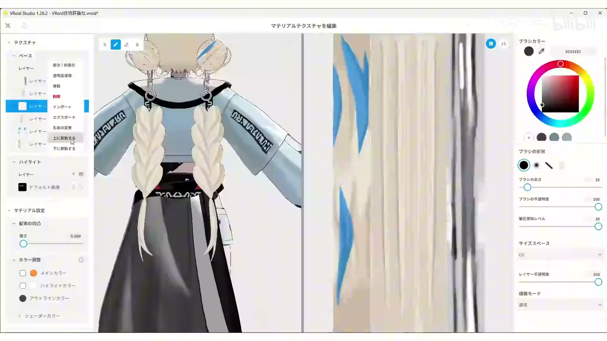
脑后两股收成麻花，仍是导引线绕出来的，不是另做模型。材质条上再补几笔蓝，辫子侧面就有和刘海一样的挑染。袖子上的字和黑裙在这一帧已经穿上，用来对位置。
发束绑骨骼
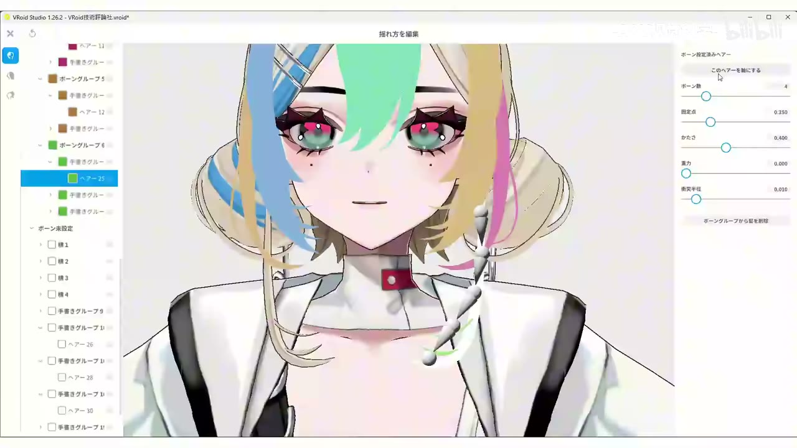
「揺れ方を編集」里把要动的发束勾上骨骼。这一帧刘海被涂成绿、粉、黄，是为了分清正在绑的是哪一束。面板读数：ボーン数 4，固定点 0.250，かたさ 0.406，重力 0.000，衝突半径 0.016。固定点往右，发根更稳；硬度停在中间，发梢仍会晃。护目镜那一组后面把硬度拉到很靠右，骨数只有 3，帽檐才不会当头发一样软。
护目镜当成头发画
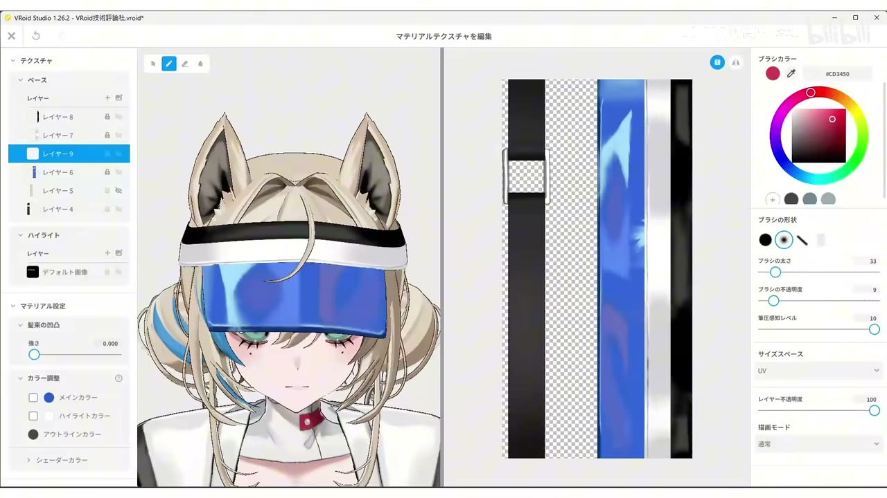
护目镜不是配饰，是一束拉平的头发。导引线在额头前排成一条直的檐，材质条上画蓝镜片，两侧留黑边和白边。因为走的是头发材质，反光是画出来的竖向高光，不是透明玻璃。
配饰
猫耳
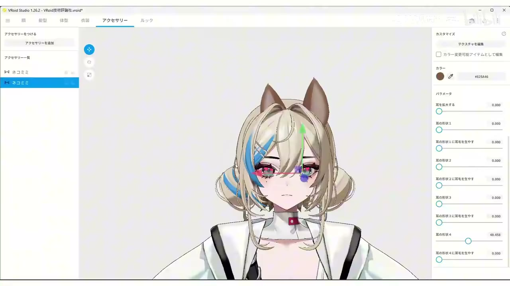
猫耳在「アクセサリー」，项目名是ネコミミ。颜色选深棕色，色块读数 #825A46。耳の形状 1 到 3 停在 0，形状 4 往右拉，耳廓变尖。用头上的轴把一对耳朵摆到发顶，不要和前面缩小过的人耳叠在一起。
摄影
用全身预览收尾
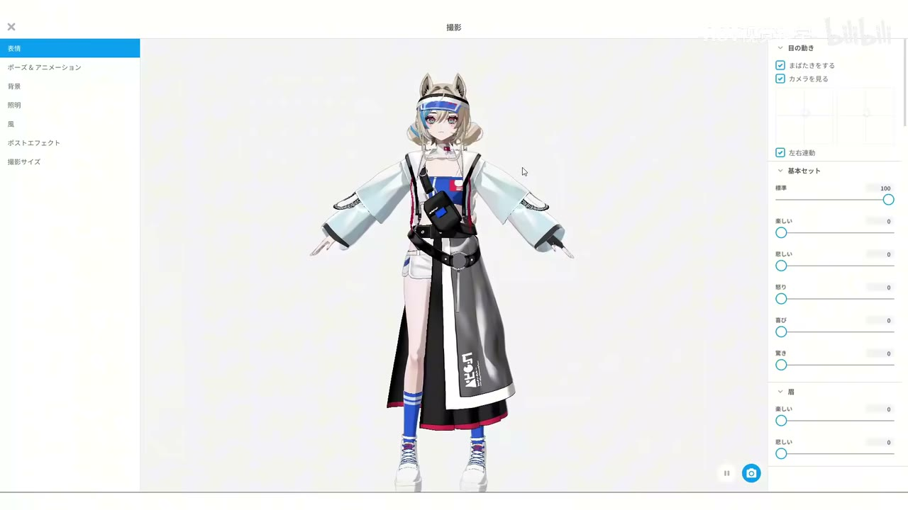
最后打开「撮影」，不改导出。勾上まばたきをする和カメラを見る，基本セット的标准表情停在 100，看整身是否还对得上设计稿：护目镜、猫耳、蓝挑染、白外套、蓝上衣、黑裙、斜挎包、腰带、蓝袜和白鞋都在。视频到这里就进片尾了，没有导出模型的步骤。